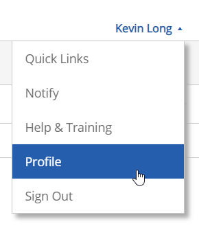
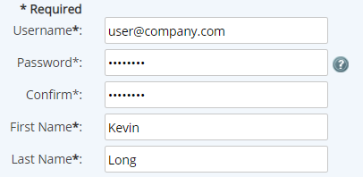
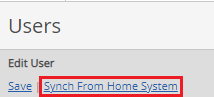

You can access your user profile to change your password and edit your personal information, including email and contact information.
Your email address and time zone, which are stored in your profile, are used to send task notifications and data warnings.
To view or edit your user profile:
Select your name and select Profile from the help menu.

Review and edit your profile information as needed. Required information is marked with an asterisk.
Username*: This is the user name used for signing in. It must be unique.
Password* and Confirm*: Use these boxes only if you want to change your password. If you are making other changes but do not want to change your password, you can leave them blank.
First Name* and Last Name*: Identifies you internally in the system.
User Time Zone*: The time zone stored with your profile is used for all task and workflow assignments. Check "Automatically adjust for Daylight Saving Time" if you want time fields to adjust for DST.
Culture*: The Culture selected in the user profile determines the appropriate interface and language shown to you. Included in the localized interface are all standard user interface components (standard text, buttons, links, etc.) as well as such items as date formats, calendars and numeric formats appropriate to the culture. Custom localization can be done for system-specific components, so that system model objects and custom field values will also be presented in the appropriate language. Culture options allow for display of UI components in the language of choice. See the Supported Cultures section for more details.
User email*: Your correct email is important because it is used to send system notifications.
Email Delivery: Preferred email option (HTML or text-only email). HTML Email is required in order to access system links in email notifications.
Supervisor: Optionally shows user's Supervisor. (Field can be edited only with Manage Users permission.)
Receive information about EMS services and product updates: This option allows you to stay up-to-date with product updates and other services. It may be disabled by each user individually, or disabled for the whole system upon request.
Command Failure Notifications: Specify where you want to receive notifications when commands you have issued in the system fail (anytime a transaction you initiate is not successfully completed). Command failure notifications appear automatically in your Inbox messages. If you would also like to receive email, select Inbox and Email.
Report Completion Notification: Specify where you want to receive notifications when scheduled reports for which you are on the notification list have run. Report Completion notifications appear automatically in your EMS Inbox messages. If you would also like to receive email, select Inbox and Email.
Password Security Verification Questions*: The first time you log in, you will be required to choose three security questions and provide answers. These questions will be used for verification if you forget your password and need to obtain a temporary password. You may edit your questions and answers at any time from your profile.
Enter any supplementary information you want to store in the profile, such as title, phone numbers, company, location, and address. This information is optional, but may be used for reporting purposes.
Click Save.
Change Your Password
You can change your password in your personal profile. Depending upon the security setup for your system, you may be required to change your password from time to time. If your password expires, you will be redirected to a password change page the next time you attempt to sign in.
To change your password:
Select your name and select Profile from the help menu.
In the Profile page, in the Password field, enter your new password.
In the Confirm field, re-enter the password.

Click Save.
Your new password is activated immediately.
Multiple System Profiles
The system in which your user profile was created is your Home System. Occasionally, users may be given access to other systems besides their Home System. This practice is usually reserved for consultants, partners, or administrative users. Users are considered an "access users" in any systems not their Home System.
When you are granted access to another system, your current profile is copied to the alternate system. If you want to maintain different profile information (such as different email or phone number), you can edit your profile in the alternate system. If you edit your profile in your Home System, the edits are not automatically copied to other systems to which you have access. However, you can re-sync your profile to update it with your Home system profile.
To sync your profile with your Home system:
Click on the company logo at the top of the page.
From the menu, select the alternate system from the menu.
Navigate to your user profile.
In the upper left corner of the page, select Synch from Home System.

Select Save.
Supported Cultures
Currently supported cultures are: Chinese (Simplified, PRC), English (United Kingdom), English (United States), French (France), German (Germany), Polish (Poland), Russian (Russia), Spanish, Spanish (Chile), Spanish (Costa Rica), Spanish (El Salvador), Spanish (Guatemala), Spanish (Honduras), and Spanish (Nicaragua).
Spanish refers to Spanish (Mexico).
Examples of the date/time settings used in different cultures:
Cultures using DD/MM/YYYY date format:
English (United Kingdom) en-GB: 13/06/2003 24-hr time (00:00-23:59)
French (France) fr: 13/06/2003 24-hr time (00:00-23:59)
Spanish (Mexico) es-MX: 13/06/2003 AM/PM
Spanish (Costa Rica) es-CR: 13/06/2003 AM/PM
Spanish (El Salvador) es-SV: 13/06/2003 AM/PM
Spanish (Guatemala) es-GT: 13/06/2003 AM/PM
Spanish (Honduras) es-HN: 13/06/2003 AM/PM
Spanish (Nicaragua) es-NI: 13/06/2003 AM/PM
Cultures using DD.MM.YYYY date format:
German (Germany) de: 13.06.2003 24-hr time (00:00-23:59)
Polish (Poland) pl: 13.06.2003 24-hr time (00:00-23:59)
Russian (Russia) ru-RU: 13.06.2003 24-hr time (00:00-23:59)
Cultures using MM/DD/YYYY date format:
English (United States) en-US: 06/13/2003 AM/PM
Cultures using YYYY/MM/DD date format:
Chinese (Simplified, PRC) zh-CN: 2003/06/13 24-hr time (00:00-23:59)
Cultures using DD-MM-YYYY date format:
Spanish (Chile) es-CL: 13-06-2003 24-hr time (00:00-23:59)
Examples of the number formats (decimal separator) used in different cultures:
Cultures using a dot ( . ) as a decimal separator:
English (United States) en-US: 22.5
Chinese (Simplified, PRC) zh-CN: 22.5
English (United Kingdom) en-GB: 22.5
Spanish (Mexico) es-MX: 22.5
Spanish (El Salvador) es-SV: 22.5
Spanish (Guatemala) es-GT: 22.5
Spanish (Honduras) es-HN: 22.5
Spanish (Nicaragua) es-NI: 22.5
Cultures using a comma ( , ) as a decimal separator: